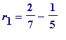
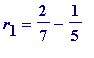
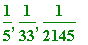
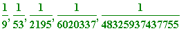
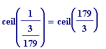

The odd-greedy algorithm problem
We start with a simple numerical observation:
-
represents
(which has an
odd
denominator)
as a sum of unit fractions all of whose denominators are even -
 represents the same
represents the same

as a sum of unit fractions all of whose denominators are odd
A natural question to ask is this: if
 is a fraction with an odd denominator, does it have an egyptian fraction representation with all denominators odd? (It is automatic that a fraction - in reduced form - with an even denominator, could
not
have such a representation.)
is a fraction with an odd denominator, does it have an egyptian fraction representation with all denominators odd? (It is automatic that a fraction - in reduced form - with an even denominator, could
not
have such a representation.)
It has been proved (R. Breusch; see References) that every
 , with
b
odd
, has an egyptian fraction representation in which every denominator is also
odd
.
, with
b
odd
, has an egyptian fraction representation in which every denominator is also
odd
.
The first of the above representations of
 is clearly obtained by applying the
standard greedy
algorithm, but the second representation is obtained by making the following
odd-greedy
modification. Start by asking if we may represent
is clearly obtained by applying the
standard greedy
algorithm, but the second representation is obtained by making the following
odd-greedy
modification. Start by asking if we may represent
 by:
by:
with all the odd
and see how far we can get by attempting to use the standard greedy algorithm:
-
![r[0] = 2/7](images/Egyptian249.gif) and we
attempt
=
is
even
. Now we attempt the
second closest
unit fraction, the one with denominator 5. So we set:
. That leads to
=
which gives

=
, and the thing to note is the
increased
numerator (that
novel
behaviour means we now have a problem on our hands...). However, we have
, and we plough on with the
to see:
and we
attempt
=
is
even
. Now we attempt the
second closest
unit fraction, the one with denominator 5. So we set:
. That leads to
=
which gives

=
, and the thing to note is the
increased
numerator (that
novel
behaviour means we now have a problem on our hands...). However, we have
, and we plough on with the
to see:
-
![r[1] = 3/35](images/Egyptian259.gif) and we
attempt
=
is
even
. So we attempt
, the next best denominator. That leads to
=
which gives
=
, and we note there is yet another
increased
numerator. So far
, and we plough on with
to see:
and we
attempt
=
is
even
. So we attempt
, the next best denominator. That leads to
=
which gives
=
, and we note there is yet another
increased
numerator. So far
, and we plough on with
to see:
-
![r[2] = 4/455](images/Egyptian269.gif) and we
attempt
=
is
even
. So we attempt
, the next best denominator. That leads to
=
which gives
=
=
, is a unit fraction (that's
and we
attempt
=
is
even
. So we attempt
, the next best denominator. That leads to
=
which gives
=
=
, is a unit fraction (that's
![1/n[4]](images/Egyptian278.gif) ) with an odd denominator!!
) with an odd denominator!!
Thus we have ended up with
.
Advice. Do some examples to get the hang of this modification to the standard greedy algorithm.
'Doing'
leads to the representation
 . Don't allow that
to put you off.
. Don't allow that
to put you off.
Do these examples:
and
 .
.
The odd-greedy algorithm (unanswered) question is simply this
:
does the above process always
terminate
?
The point of that question should be obvious:
-
With the regular greedy algorithm there is the (proven)
decrease
in the successive numerators; it's precisely that which gaurantees the termination
HOWEVER
-
When one attempts the odd-greedy modification, the behaviour of successive denominators can be, and generally is,
quite different
. And while the sequence of successive
r
's is decreasing (but their integral numerators may not be), there is the prospect that that
could
exist some initial fraction
![r[0]](images/Egyptian285.gif) which leads to an
infinite
sequence:
which leads to an
infinite
sequence:
See Stan Wagon's email below.
(An interesting elementary question to investigate is: how many fractions (with odd numerator) can one produce for which the greedy and odd-greedy algorithms produce the same output. For example, is produced by both.)
I have adapted our earlier ordinary greedy algorithm to put the above odd greedy approach into effect. I could write a more sophisticated one (one, for example that would reject an input 'R' which didn't have an odd numerator), but I want to keep everything to a minimum.
The thinking behing the lines should be obvious to anyone who has done hand examples.
>
odd_egypt := proc(R)
local r, n, k; r[0] := R:
if ceil(1/r[0]) mod 2 = 1 then n[1] := ceil(1/r[0]);
else n[1] := ceil(1/r[0]) + 1;
fi: r[1] := r[0] - 1/n[1];
for k from 2 while r[k-1] <> 0 do
if ceil(1/r[k-1]) <= n[k-1] then n[k] := n[k-1] + 2;
elif ceil(1/r[k-1]) mod 2 = 1 then n[k] := ceil(1/r[k-1]);
else n[k] := ceil(1/r[k-1])+1;
fi; r[k] := r[k-1] - 1/n[k];
od: seq(1/n[j], j=1..k-1); end:
>
> odd_egypt(2/7); # the above initial example
> odd_egypt(8/9);
> odd_egypt(14/15);
> odd_egypt(3/13);

>
Some small numerator examples (producing smallish denominators) are:
>
odd_egypt(2/3);
odd_egypt(2/5);
odd_egypt(2/9);
odd_egypt(3/5);
odd_egypt(3/7);
odd_egypt(3/11);
>
Some small numerator examples that produce large denominators are:
>
odd_egypt(2/11);
odd_egypt(2/19);
odd_egypt(2/23);
odd_egypt(3/17);
odd_egypt(3/23);


>
In October 1996, Stan Wagon announced a
quite extraordinary numerical discovery
: Here are two emails of Wagon's (in the public domain) which capture the excitement of his discovery:
Date: Sat, 12 Oct 1996 17:05:31 -0700 (PDT)
From: WAGON@thuban.ac.hmc.edu
Subject: Odd Greediness
To: eppstein@ics.uci.edu
-----------------------------------------------------------------
I am busily updating my Egyptian fraction algorithms for a revision of MinA. I was testing your heuristic for the Odd Greedy, when I discovered 3/179. Odd Greedy does not do well on this at all. In fact, I have not completed the representation. So far I am at a term with 55,000 digits. The number of digits is doubleing at each stage. I hesitate to suggest that this might be a counterexample...... stan wagon
Date: Sun, 13 Oct 1996 12:11:32 -0700 (PDT)
From: WAGON@thuban.ac.hmc.edu
Subject: an amazing Egyptian fraction
To: Klee, Campbell, Guy, Eppstein, Wellin
------------------------------------------------------------------
The number 3/179 has a rather amazing output when the greedy odd Egyptian fraction algorithm is tried out on it. Recall that it is a famous open question whether
ODD GREEDY
always halts. On 3/179 the algorithm produces 19 terms, the last of which has 439492 digits!!! Takes a little under an hour for my computer to get this.
AND
the sequence of numerators of the remainders is
somewhat amazing
:
3, 4, 5, 6, 7, 8, 9, 10, 11, 12, 13, 14, 15, 16, 17, 2, 3, 4, 1
Of course, when I saw the 3, 4, 5, 6... I thought I was on to something....could this continue forever? Well, I don't think so.
-----------------------------------
Wagon's 439492 digits may be verified with the program above (obviously I won't save it for placing on web site!!):
> # odd_egypt(3/179);
>
I have modified the earlier odd_egypt procedure to make it stop after a certain number of steps, BOUND (I've simply removed the 'while' line and replaced it with "for k from 2 to BOUND do"):
>
stop_odd_egypt := proc(R, BOUND)
local r, n, k; r[0] := R:
if ceil(1/r[0]) mod 2 = 1 then n[1] := ceil(1/r[0]);
else n[1] := ceil(1/r[0]) + 1;
fi: r[1] := r[0] - 1/n[1];
for k from 2 to BOUND do
if ceil(1/r[k-1]) <= n[k-1] then n[k] := n[k-1] + 2;
elif ceil(1/r[k-1]) mod 2 = 1 then n[k] := ceil(1/r[k-1]);
else n[k] := ceil(1/r[k-1])+1;
fi; r[k] := r[k-1] - 1/n[k];
od:
print(seq(1/n[j], j = 1..k-1));
lprint(`See the numerators, including the initial one:`);
seq(numer(r[j]), j=0..BOUND); end:
> stop_odd_egypt(3/179, 5);

`See the numerators, including the initial one:`
>
You may verify the first few by hand:

=
, is even, so go to denominator 61
Then
=
, etc
> 3/179 - 1/61;
> 4/10919 - 1/2731;
> 5/29819789 - 1/5963959;
> stop_odd_egypt(3/2879, 4);
`See the numerators, including the initial one:`
> stop_odd_egypt(5/5809, 4);
`See the numerators, including the initial one:`
>